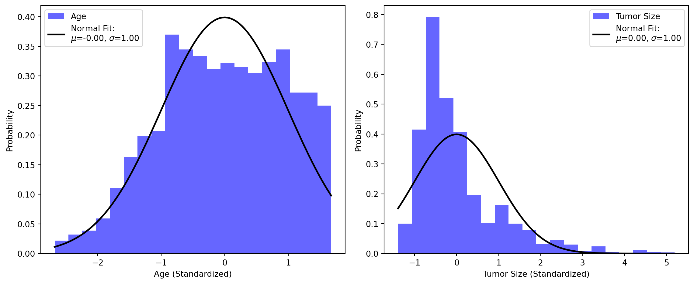

# Import necessary libraries
import numpy as np
import pandas as pd
import matplotlib.pyplot as plt
from scipy.stats import norm, lognorm
from sklearn.preprocessing import StandardScaler
from sklearn.mixture import GaussianMixtureProbability Theory and Random Variables are an important component of statistical analysis in various studies. Probability theory serves as a framework for quantifying the likelihood of various outcomes in many statistical problems. In particular, probability theory and random variables have proven invaluable in the domain of breast cancer research. They enable researchers to model and analyze complex data, and facilitate a deeper understanding of the disease’s prevalence, risk factors, and treatment outcomes, ultimately contributing to more effective diagnosis and treatment strategies. It’s application and connection in breast cancer research allows us to better understand uncertainty in breast cancer cases as well as many other real-world applications. The below code provides a closer look at probability theory and random variable study using a breast cancer dataset.
# Load your breast cancer dataset
data = pd.read_csv('Breast_Cancer.csv')
data.head()| Age | Race | Marital Status | T Stage | N Stage | 6th Stage | differentiate | Grade | A Stage | Tumor Size | Estrogen Status | Progesterone Status | Regional Node Examined | Reginol Node Positive | Survival Months | Status | |
|---|---|---|---|---|---|---|---|---|---|---|---|---|---|---|---|---|
| 0 | 68 | White | Married | T1 | N1 | IIA | Poorly differentiated | 3 | Regional | 4 | Positive | Positive | 24 | 1 | 60 | Alive |
| 1 | 50 | White | Married | T2 | N2 | IIIA | Moderately differentiated | 2 | Regional | 35 | Positive | Positive | 14 | 5 | 62 | Alive |
| 2 | 58 | White | Divorced | T3 | N3 | IIIC | Moderately differentiated | 2 | Regional | 63 | Positive | Positive | 14 | 7 | 75 | Alive |
| 3 | 58 | White | Married | T1 | N1 | IIA | Poorly differentiated | 3 | Regional | 18 | Positive | Positive | 2 | 1 | 84 | Alive |
| 4 | 47 | White | Married | T2 | N1 | IIB | Poorly differentiated | 3 | Regional | 41 | Positive | Positive | 3 | 1 | 50 | Alive |
We specifically want to examine the patient age and tumor size varibales for this study.
# Select the relevant features: Age and Tumor Size
X = data[['Age', 'Tumor Size']]
X| Age | Tumor Size | |
|---|---|---|
| 0 | 68 | 4 |
| 1 | 50 | 35 |
| 2 | 58 | 63 |
| 3 | 58 | 18 |
| 4 | 47 | 41 |
| ... | ... | ... |
| 4019 | 62 | 9 |
| 4020 | 56 | 46 |
| 4021 | 68 | 22 |
| 4022 | 58 | 44 |
| 4023 | 46 | 30 |
4024 rows × 2 columns
We standardize the data to mitigate the effect of outliers and simplify interpretability.
# Step 1: Standardize the data
scaler = StandardScaler()
X_std = scaler.fit_transform(X)# Compute mean/standard deviation for the standardized data
for feature in ['Age', 'Tumor Size']:
mean = X_std[:, X.columns.get_loc(feature)].mean()
std = X_std[:, X.columns.get_loc(feature)].std()
print(f"{feature}: Mean = {mean}, Standard Deviation = {std}")Age: Mean = -4.855846230964899e-17, Standard Deviation = 1.0
Tumor Size: Mean = 5.120710570835712e-17, Standard Deviation = 1.0# Plot Histograms and Fit Gaussian Distributions
plt.figure(figsize=(12, 5))
for i, feature in enumerate(['Age', 'Tumor Size'], start=1):
plt.subplot(1, 2, i)
plt.hist(X_std[:, X.columns.get_loc(feature)], bins=20, density=True, alpha=0.6, color='b', label=feature)
x = np.linspace(X_std[:, X.columns.get_loc(feature)].min(), X_std[:, X.columns.get_loc(feature)].max(), 100)
# Fit a Gaussian (Normal) distribution
mu, std = norm.fit(X_std[:, X.columns.get_loc(feature)])
p = norm.pdf(x, mu, std)
plt.plot(x, p, 'k', linewidth=2, label=f'Normal Fit:\n$\mu$={mu:.2f}, $\sigma$={std:.2f}')
plt.xlabel(feature + ' (Standardized)')
plt.ylabel('Probability')
plt.legend()
plt.tight_layout()
plt.show()
# Calculate mean for Age and Tumor Size
means = X.mean()
meansAge 53.972167
Tumor Size 30.473658
dtype: float64# Calculate variance Age and Tumor Size
variances = X.var()
variancesAge 80.337778
Tumor Size 446.041563
dtype: float64# Calculate covariance matrix for Age and Tumor Size
covariance_matrix = X.cov()
covariance_matrix| Age | Tumor Size | |
|---|---|---|
| Age | 80.337778 | -14.616692 |
| Tumor Size | -14.616692 | 446.041563 |
The results above show that the age variable has a higher mean than the tumor size variable. However, it is interesting that the tumor size appears to have a significantly larger variance compared to the age. It can be seen from the visualizations above that we have fitted normal Gaussian distributions. The standardized tumor size histogram/curve appear to be slightly skewed to the right compared to the standardized age histogram/curve. Though the tumor size histogram is standardized, the shape of the curve may be a result of the significant variance in the tumor size variable.
Gaussian Mixture Model
Another technique that is often applicable to probability theory and random variable studies is the Gaussian Mixture Model method. This method is used to represent complex variable distributions. It can also be used in anomaly/outlier detection as well (see the anomaly/outlier detection post). GMMs are used to estimate the probability density of a continuous random variable. They represent the probability distribution as a weighted sum of multiple Gaussian distributions. The GMM can provide a more flexible representation of complex data distributions as opposed to a single Gaussian distribution. The code below explores the variables from the same dataset using the GMM technique.
# Use the Gaussian Mixture Model Approach
gm = GaussianMixture(n_components=3, n_init=10, random_state=42)
gm.fit(X)GaussianMixture(n_components=3, n_init=10, random_state=42)# Computes the weights
gm.weights_array([0.58662902, 0.13513493, 0.27823604])# Computes the means
gm.means_array([[54.8125781 , 18.22267396],
[52.17021474, 69.50342509],
[53.07543614, 37.34731049]])# Computes the covariances
gm.covariances_array([[[ 76.68503418, -1.77744933],
[ -1.77744933, 45.93142242]],
[[ 85.62276729, 4.36998368],
[ 4.36998368, 555.47154068]],
[[ 81.53029285, 11.13430287],
[ 11.13430287, 132.53955524]]])# Checks if algorithm converged
gm.converged_True# Checks the number of iterations algorithm took to converge
gm.n_iter_6# Predicts which cluster each instance belongs to
gm.predict(X)array([0, 2, 1, ..., 0, 2, 2])# Predicts probabilities that instance came from cluster
gm.predict_proba(X).round(3)array([[0.978, 0.007, 0.015],
[0.132, 0.067, 0.802],
[0. , 0.695, 0.305],
...,
[0.919, 0.006, 0.075],
[0.003, 0.121, 0.876],
[0.432, 0.039, 0.529]])# Estimate the log of the PDF at any location
gm.score_samples(X).round(2)array([-9.68, -7.61, -9.1 , ..., -7.69, -7.91, -7.58])The code above uses the Gaussian Mixed Model method to estimate the logarithm of the probability density function of the data points in the variable ‘X’. The GMM approach is a powerful tool in probability theory and random variable studies. It’s applications in real-world situations like breast cancer studies make it invaluable throughout the industry and research. GMM enables us to model various data distributions to gain a better understanding of probability distribution functions, anomaly detection, and random variables as a whole. This versatile tool continues to allow statisticians and researchers to capture various components of complex data distributions.